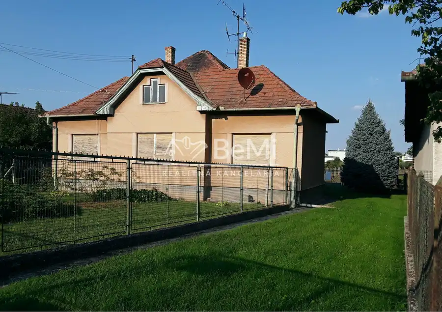
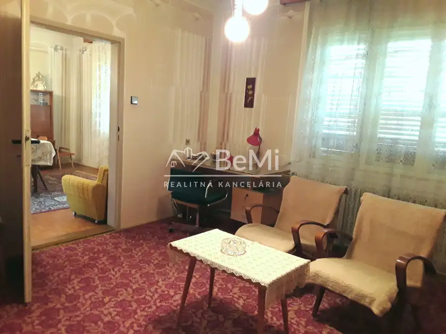
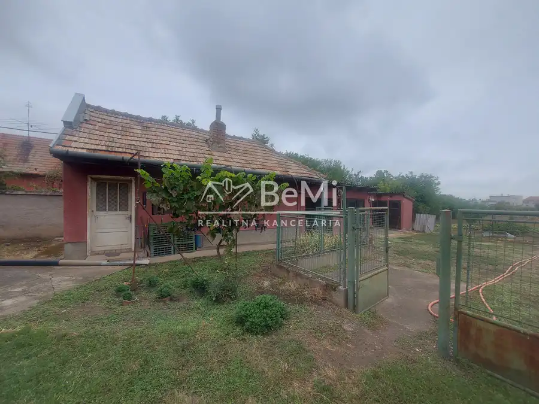
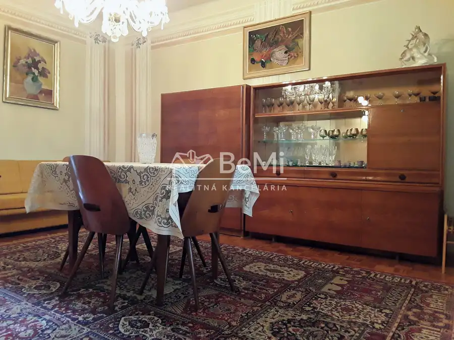
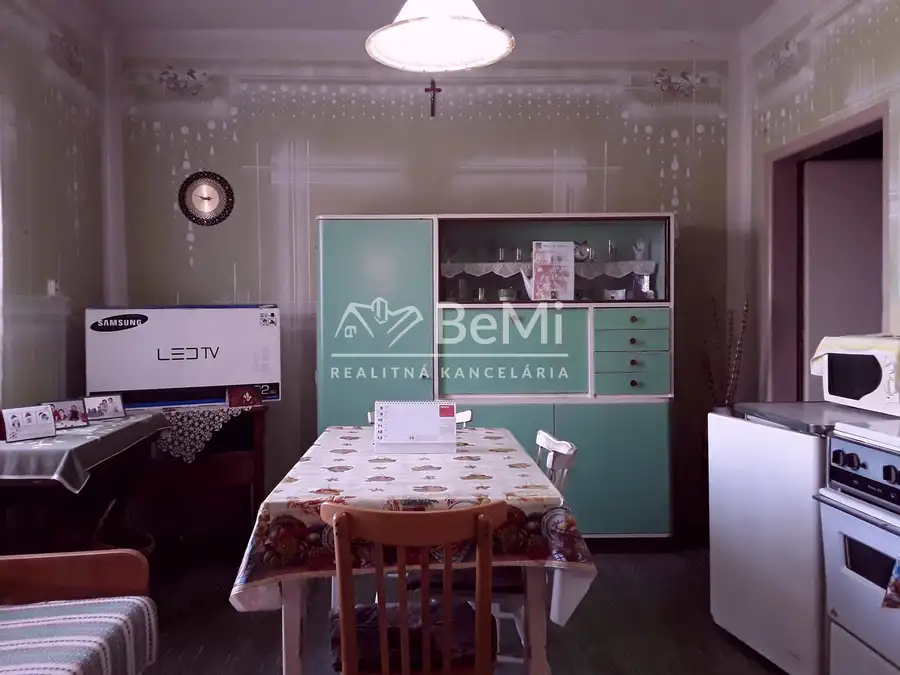
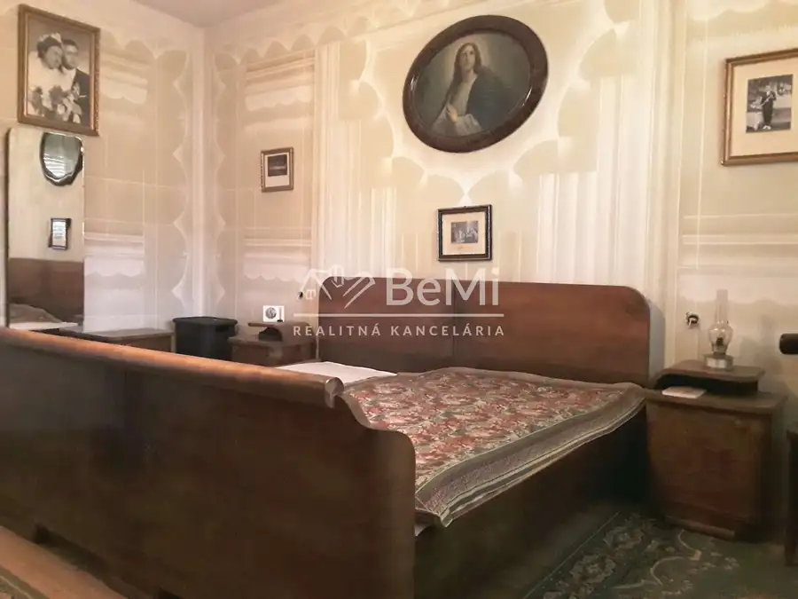
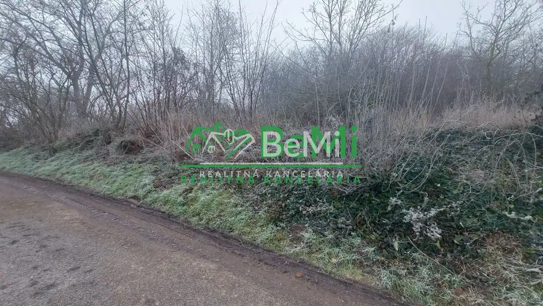
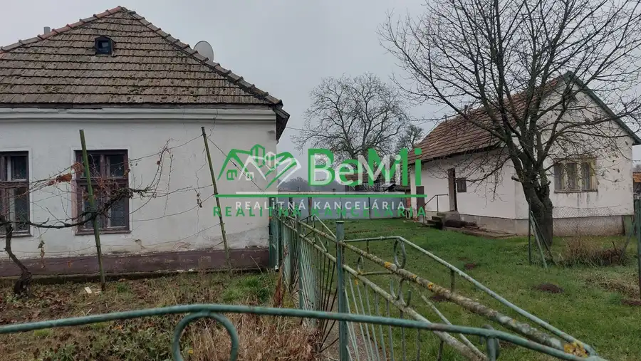
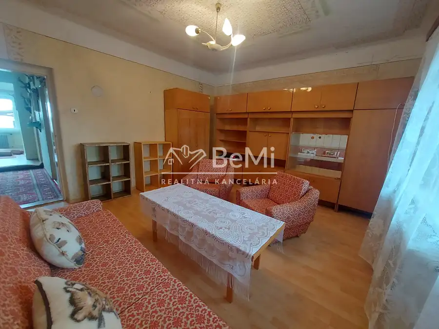

Predaj rodinný dom, veľký pozemok, obec Veľký Kýr (1069-12-RP)
Veľký Kýr






- Plocha110 m²
- StavPôvodný stav
- VlastníctvoOsobné
O nehnuteľnosti
1069-12-RPPonúkame Vám na predaj rodinný dom v obci Veľký Kýr, 14km od krajského mesta Nitra s veľkým pozemkom cca 30 ár, šírka cca 19m x 160m. Rodinný dom v pôvodnom ale zachovalom stave, postavený v roku 1960. Úžitková plocha domu 100 m2. Dispozícia domu : zastrešená veranda, predsieň so vstupom do kuchyne, obývačka, špajza a kúpeľna s WC, plus ďalšie dve izby – pracovňa a spálňa. Na pozemku je letná kuchyňa s komorou a ďalšie hospodárske miestnosti. Plynový kotol ústredného vykurovania a vodárnička sú v suteréne objektu, dom je pripojený na elektrinu, napojená voda zo studne, pred pozemkom obecná voda. Prístupová asfaltová cesta. Nachádza sa pri hlavnej ceste v centre obce.Výborná investičná ponuka, vhodný i na podnikateľské účely.Cena : 129 000 EurV prípade záujmu o obhliadku môžete volať 7dní v týždni 0908 135 800, email faberova@realitybemi.sk.NAŠE CENY SÚ VRÁTANE PROVÍZIE ZA KOMPLETNÝ PRÁVNY SERVIS A SÚ SCHVÁLENÉ MAJITEĽOM.Prostredníctvom nášho finančného poradcu Vám bezplatne pomôžeme s financovaním kúpy nehnuteľností.
Parametre
- Druh
- Rodinný dom
- Dátum zverejnenia
- 03. 09. 2025
- Plocha pozemku
- 2979 m²
- Počet izieb / miestností
- 3
- Stav nehnuteľnosti
- Pôvodný stav
- Typ
- Predaj
- Vlastníctvo
- Osobné
- Vybavenie
- Pivnica
- Úžitková plocha
- 110 m²
Kde to je


Mohlo by Vás zaujímať

PozemokNové 145 000 €Predaj stavebný pozemok 1706m2 Veľký Báb pri Nitre(153-14-ERF) Báb 1706 m²
DomNové 139 900 €Predaj starší rodinný dom, Alekšince, pozemok 2750m2, Nitra (202-12-JUF) Alekšince 150 m²
DomNové 138 000 €Predaj rodinný dom Černík, pozemok 2486m2, okr. Nové Zámky(254-12-JUF) Černík